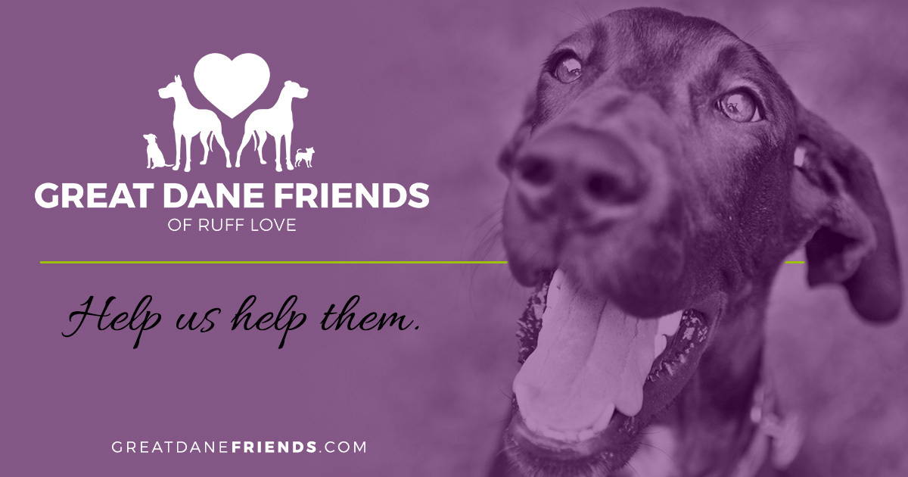

Overveiw of Great Danes
The Great Dane is a large sized dog breed originating from Germany. The Great Dane descends from hunting dogs from the Middle Ages used to hunt wild boar and deer, and as guardians of German nobility. It is one of the largest breeds in the world along with its relative, the Irish Wolfhound. Wikipedia Life span: 8 – 10 years Speed: 30 miles per hour highlandcanine.com Breed of: Dog Height: Female: 28–32 inches (71–81 cm), Male: 30–34 inches (76–86 cm) Weight: Female: 99–130 lbs (45–59 kg), Male: 120–200 lbs (54–90 kg) Colors: Black, Brindle, Fawn, Mantle, Harlequin, Blue Temperament: Friendly, Devoted, Reserved, Confident, Loving, Gentle
